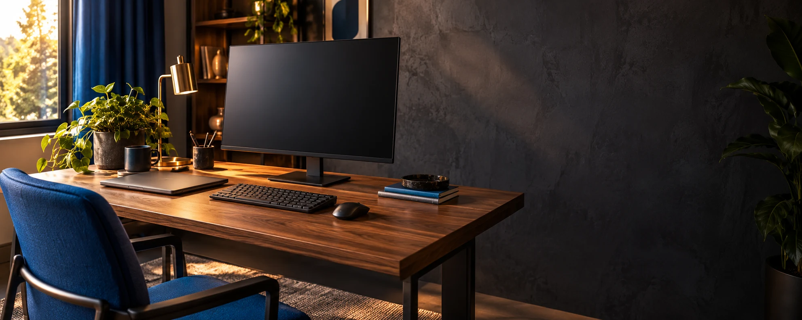

TECHAPROVADO · GUIAS DE COMPRA
Seu setup precisa trabalhar a seu favor.
Mais conforto e escolhas que fazem sentido para trabalhar, estudar e criar.

Guia completo de teclado 2026: membrana x mecânico, switches, hot-swap e conexão sem fio explicados, com um ranking do custo-benefício ao topo de linha — sem empurrar teclado caro pra quem não precisa.
Ler guia completo
Guia completo de mouse sem fio 2026: DPI, sensor, conexão 2.4GHz x Bluetooth x tri-mode explicados, com um ranking do custo-benefício ao topo de linha em produtividade.
Ler guia completo
Guia completo de monitor 2026: resolução, painel IPS x VA, taxa de atualização e cor explicados, com um ranking do custo-benefício ao ultrawide 2K.
Ler guia completo
Guia completo de notebook 2026: processador, RAM, SSD e tela explicados, e um ranking do custo-benefício ao modelo com placa de vídeo dedicada, para trabalho e estudo.
Ler guia completo📲 GUIAS E DICAS NO SEU FEED
Dicas práticas antes de comprar, em carrosséis e vídeos curtos, sempre com link para o guia completo.